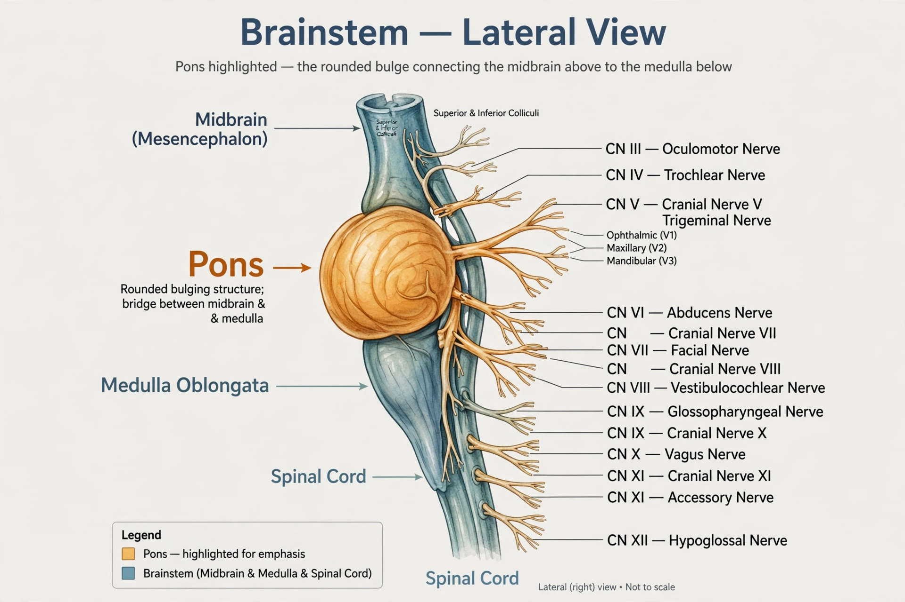

The pons (from Latin pons, "bridge") is part of the brainstem in humans and other tetrapods that lies inferior to the midbrain, superior to the medulla oblongata and anterior to the cerebellum. It is divided into the ventral pons, or basilar part, and the dorsal pons, or tegmentum.
The pons is also called the pons Varolii ("bridge of Varolius"), after Italian surgeon Costanzo Varolio (1543–75).
The pons measures about 2.5 cm in length. Most of it appears as a broad anterior bulge rostral to the medulla. Posteriorly, it consists mainly of two pairs of thick stalks called cerebellar peduncles. They connect the cerebellum to the pons (middle cerebellar peduncle) and midbrain (superior cerebellar peduncle).
The ventral pons contains pontine nuclei that relay signals from the forebrain to the cerebellum, along with nuclei that deal primarily with sleep, respiration, swallowing, bladder control, hearing, equilibrium, taste, eye movement, facial expressions, facial sensation, and posture.
The dorsal pons, or pontine tegmentum, contains nuclei of cranial nerves V–VIII and the reticular formation.
The nuclei of the pons relay signals for voluntary movement, regulate arousal and sleep, and contribute to respiratory control through the pneumotaxic and apneustic centres. It is involved in REM sleep and dreaming.
Central pontine myelinolysis is a demyelinating condition associated with rapid correction of hyponatraemia. Stroke, tumours, and multiple sclerosis can also affect the pons.
See also: Brainstem, Medulla oblongata, Cerebellum, Midbrain